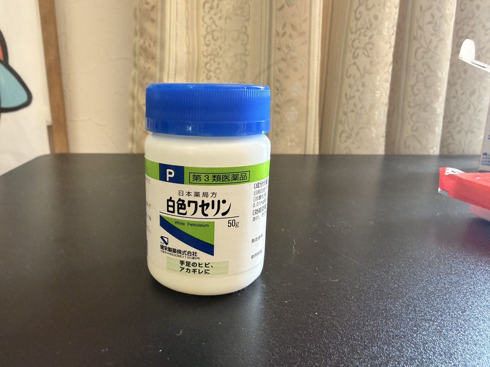

唐沢ライドで尻が限界。パワーより痛みが勝った日
昨日、太平でTSS120.3を踏んだ翌日に、私はまた唐沢へ向かった。さすがに昨日ほど踏むつもりはなかったが、登りを入れる以上それなりに練習にはなる――はずだった。ところが今日の主役は、パワーでも心拍でもTSSでもなかった。尻である。

全部読むのが面倒な人向けまとめ
- ライド唐沢ソロ・28.65km・獲得472m・TSS83.8（前日は太平TSS120.3）
- 数値だけ見れば登りは何本か入っていて、悪くない（最大273Wの登り）
- でも体感はサドル擦れの痛みで集中できず、全然踏めなかった
- 原因らしきもの機材・ポジション変更なし。前からの違和感＋摩擦・汗・連日のライド
- ケアオロナインよりワセリン（初購入）。乗車時の絆創膏はやめておく
- 結論尻が痛ければ踏めない。コンディション管理も立派な練習
数値だけ見れば、そこまで悪くない
先に言い訳をしておくと、データそのものは悪くない。前日に太平でしっかり踏んだ翌日にしては、唐沢の登りもそれなりに入っている。
- 距離 / 獲得標高28.65km / 472m
- 平均パワー / NP164W / 222W
- IF / TSS0.809 / 83.8
- 平均心拍 / 最大心拍121bpm / 154bpm
- 平均呼吸数23brpm
- 平均気温25.6℃
主な登りラップを見ても、Lap2・Lap4・Lap6あたりは唐沢の登りとしてまとまっている。Lap4はほぼダンシングで登っていて、ケイデンスが低めなのはたぶんその影響だ。
- Lap29:39 / 平均261W（NP271）/ 心拍140bpm
- Lap47:16 / 平均263W（NP266）/ 心拍141bpm ※ほぼダンシング
- Lap67:08 / 平均273W（NP278）/ 心拍140bpm
- Lap81:51 / 平均339W（NP330）/ 心拍122bpm
TSS83.8。軽くはない。データだけ並べれば「前日の疲労がある中でも、まあ登れている」と言えなくもない。でも、体感は全然違った。
走り出す前から、違和感はあった
正直に書くと、走り出す前からお尻には少し違和感があった。少し前からサドルの擦れについてAIに相談していたので、完全に突然というわけではない。「ちょっと気になるな」くらいの状態で走り出した。
レーパンはいつものもので、サドルもポジションも変えていない。新しい機材を試したわけでもない。なのに痛い。こういうのが一番困る。明確に何かを変えたなら対策もしやすいが、いつも通りの装備で痛くなると、原因がよく分からないのだ。今思えば、違和感がある時点でワセリンなりを塗っておけばよかったのだが、もちろんライド前には何も塗っていない。学習しない男である。
痛みがあると、本当に踏めない
今日いちばん身にしみたのはこれだ。お尻が痛いと、まったく集中できない。脚がきついとか心拍が上がって苦しいとか、そういう前向きな苦しさとは別物で、サドルに座るたびに痛みへ意識が持っていかれる。「踏むぞ」ではなく「痛いな」になる。これはダメだった。
練習で尻がむけて痛くなった経験は、たぶん過去にもある。ただ、いつだったか思い出せないくらい久しぶりで、久しぶりすぎてすっかり忘れていた。尻が痛いと踏めない――この当たり前を、今日また一から教わった。
友人の富士ヒル話を、身をもって理解した
そういえば友人が、今年の富士ヒルで「尻が痛くなって悪いタイムだった」と言っていた。その時はもちろん大変だったんだろうとは思っていたが、正直どこか他人事だった。それを今日、かなりはっきり理解した。これは確かに踏めない。
脚が残っているとか心肺がどうとか、その手前で集中が切れる。登りで苦しいのはまだいい。苦しいのは練習なので、ある意味では想定内だ。でもサドルに当たるたびに痛いのは別問題で、富士ヒル本番でこれが起きたらかなり厳しい。今日の唐沢でさえ集中できなかったのだから、あの長い登りで同じことが起きたら、と思うと少し背筋が寒い。
左が痛いので右に逃げた。でも解決ではない
痛みは左側の方が強かった。終盤になって、右に重心を少しずらせばごまかせることに気づいた。こういう小細工をライド中に発見するあたり、人間は妙にしぶとい。
ただ、これは解決ではない。左から右へ逃げただけで、実際そのうち右も若干痛くなってきた。左をかばって右に逃げ、右も痛くなる。人間に用意された逃げ道は、そう多くないのである。
帰って確認したら、少し皮がむけていた
帰宅後に確認したら、左側を中心に少し皮がむけて赤くなっていた。ああ、これは痛いわけだ。擦れの段階を少し超えて、皮膚がダメージを受けていた。ライド中に集中できなかったのは、気のせいではなかったらしい。
心拍計を導入してパワーと心拍で練習の質を上げようとし、ソックスやゲイターも試し、富士ヒルゴールドに向けていろいろ実験している。それでも、結局のところ尻が痛いと踏めない。現実はだいたい、こういう地味なところで止まる。
ワセリンを、初めて買った
ライド後、いつものようにAIへ相談した。オロナインがいいのか、ワセリンがいいのか、絆創膏は貼るべきか、どれくらいで治るのか。整理した結果、今回はオロナインよりワセリンの方が合いそうという話になった。薬で治すというより、摩擦を減らして皮膚を保護する目的だ。軽い皮むけと赤みなら、まずは保護で十分らしい。

というわけでワセリンを買いに行ったのだが、実はワセリンを買うのは初めてで、売り場がまるで分からなかった。仕方なく店員さんに聞いた。富士ヒルゴールドを目指す前に、まずワセリン売り場を覚えた。順番として正しいのかは、よく分からない。
絆創膏ではなく、まずはワセリン
絆創膏についても聞いてみた。結論としては、サドルに当たる場所に普通の絆創膏を貼って乗るのは微妙そうだった。汗でズレたり端がめくれたり、粘着部分が擦れてかえって悪化する可能性がある。家で下着に擦れて痛い時の短時間保護ならありだが、乗車時のメイン対策としては、まずワセリンやシャモアクリームで摩擦を減らす方がよさそうだ。
塗り方は、1日2〜3回くらい。シャワー後・寝る前・日中ヒリヒリする時に、厚塗りではなく薄い膜を作るイメージで塗る。これも自分用のメモとして残しておく。
明日のローラーは、お尻次第
明日はローラーで20分SST＋15分FTPペースをやる予定だった。でも、これはお尻次第にする。今ここで無理しても仕方ない。脚を鍛えるつもりでローラーに乗って、皮膚を削っていたら本末転倒だ。しかも土曜には友人と唐沢山でゴルビーをやる予定があり、ここで悪化させると土曜に響く。
脚の疲労ならまだ調整できる。でも皮むけは、擦れば擦るほど悪化する。限界を攻める方針は変えないし、行ける日は攻める。ただし今回の相手は脚でも心肺でもない。尻である。尻を相手に気合いで勝負しても、たぶん強くはならない。
今日やってみて思ったこと
今日は唐沢で登りを入れた。数値だけ見れば完全に悪いライドではなく、TSS83.8で登りも何本かこなしている。でも体感としては、尻の痛みに負けた日だった。パワーより、痛みが勝った。
富士ヒル練習というと、FTP・TSS・NP・心拍・補給・機材、そういう話になりがちだ。でも実際は、もっと単純なところで詰まる。尻が痛ければ踏めない。お尻のコンディション管理も、立派な練習の一部だった。富士ヒルゴールドを目指す前に、まず尻を守る。今日はそういう日である。
自分用メモ
- ライド前違和感がある日は、走る前にワセリン／シャモアクリームで摩擦を減らす
- ケアワセリンを薄く1日2〜3回。乗車時の絆創膏は避ける
- 判断座ってヒリヒリするなら高強度は回避。皮むけは攻めても強くならない